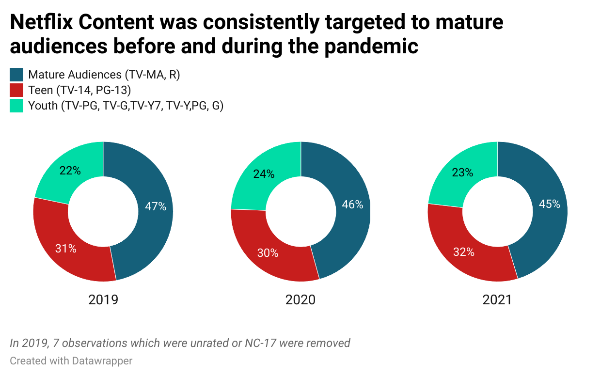
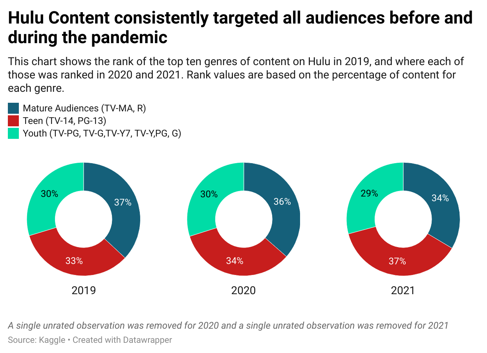

Program ratings before and during the pandemic
Both movies and TV programs are given ratings to indicate the intended (and appropriate) audience. For movies, these are R for mature audiences over 17, PG-13 for teens (and above), and G for children. TV shows have a wider variety of ratings from TV-MA for mature audiences, to TV-13 for teens, to TV-G, TV-Y, and TV-Y7 for younger children. How did program ratings differ between Netflix and Hulu from 2019-2021? Did they change after the advent of the pandemic?
More Netflix content from 2019-2021 had ratings of TV-MA or R, between 45% and 47%. Smaller content shares, approximately 30%, had ratings of TV-14/PG-13 for teen, while youth programming was approximately 23% each year.
Hulu content from 2019-2021 was nearly evenly divided between mature, teen, and youth audiences. There was slightly more programming for mature audiences in 2019 and 2020 than for teens and youth. In 2021, there was slightly more programming for teens, 37%, versus 29% for youth and 34% for mature audiences.
Did common content types change during the pandemic?
Here, we will consider the 10 most abundant genres of content on Netflix and Hulu in 2019. Were these still the most common genres in 2020 and 2021?
Documentaries were the most common type of content in 2019, but fell in rank to 12th in 2020, recovering slightly to 6th in 2021. Similarly, International Documentary Movies plummeted from 9th in 2019 to 24th in 2020 and 21st in 2021. Stand-up comedy specials were the 3rd most common content in 2019, dropping to 6th and then 29th in 2021. Children & Family Movies increased in the rankings during 2020 and 2021.
Documentaries were the most common type of content on Hulu in 2019, 2020, and 2021, though the rank of Sports and Science and Technology documentaries dropped during the pandemic. Anime genres plummeted far out of the top 10 by 2021.